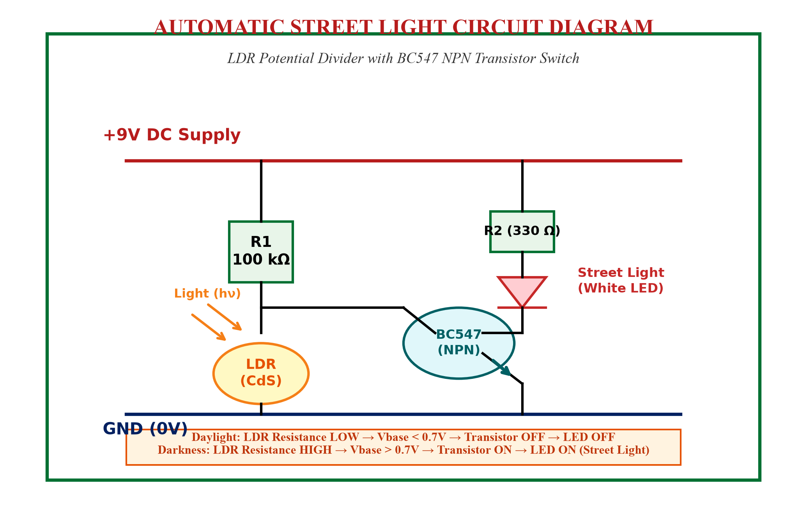

| Sr.no. | Content | Page no. |
|---|---|---|
| 1 | Acknowledgement | 4 |
| 2 | Aim of the Project | 5 |
| 3 | Apparatus and Components Required | 6 |
| 4 | Background and Energy Conservation | 7 |
| 5 | Principle and Working Theory | 8 |
| 6 | Circuit Diagram and Technical Layout | 9 |
| 7 | Experimental Assembly Procedure | 10 |
| 8 | Electrical Data and Observation Table | 11 |
| 9 | Results and Discussion | 12 |
| 10 | Sources of Error and Limitations | 13 |
| 11 | Safety Precautions | 14 |
| 12 | Bibliography | 15 |
In the accomplishment of this project successfully, many people have bestowed upon me their blessings and heartfelt support. I utilize this opportunity to express my sincere appreciation to all who have contributed towards this investigatory study.
Primarily, I express my gratitude to the Almighty for bestowing the strength, clarity, and perseverance needed to bring this academic project to fruition.
I place on record my heartfelt gratitude to our respected Principal, Mr. ___________________________, for providing excellent institutional laboratory facilities and an inspiring academic atmosphere.
I express my profound gratitude to my esteemed Physics Teacher, Mr./Ms. ___________________________, whose meticulous guidance, scholarly insights, and constructive instructions have served as the vital cornerstone towards the completion of this project.
Finally, I thank my parents and classmates for their valuable suggestions, persistent moral support, and cooperation across every phase of this investigatory research.
Municipal street lighting accounts for an enormous fraction of worldwide electrical energy consumption. In conventional municipal configurations, street lamps are either toggled manually by maintenance crews or governed by crude mechanical timers. Both paradigms suffer chronic operational inefficiencies: lights remain illuminated during broad daylight hours due to human neglect, wasting mega-watts of grid energy.
An LDR operates on the internal photoelectric effect. In darkness, valence electrons are bound to lattice atoms, yielding an enormous dark resistance (500 kΩ to 2 MΩ). When incident daylight photons strike the CdS surface with energy greater than the bandgap:
hν > Eg ⟶ Electron-Hole Pairs Generated ⟶ Resistance Collapses (~1 kΩ)
The LDR and 10 kΩ preset form a voltage divider across the 9V supply. The base voltage Vbe is governed by:
Vbase = Vsupply × [ Rpreset / (RLDR + Rpreset) ]

Viewing the flat face of the BC547 with pins pointed downwards (Left to Right):
Pin 1 (Collector - C): Connected to LED cathode via 330 Ω protective resistor.
Pin 2 (Base - B): Connected to the central junction between the LDR and 10 kΩ resistor.
Pin 3 (Emitter - E): Connected directly to Ground rail (0V / battery negative).
Electrical Parameter Measurements Across Ambient Light States:
| Circuit Parameter | Bright Ambient Daylight | Partial Twilight / Shade | Complete Darkness |
|---|---|---|---|
| LDR Resistance (RLDR) | 1.2 kΩ | 18.5 kΩ | 680 kΩ |
| Base-Emitter Voltage (Vbe) | 0.28 V | 0.58 V | 0.74 V |
| Collector Current (Ic) | 0.0 mA | 1.8 mA | 22.4 mA |
| Transistor Operating State | Cutoff (Open) | Active Transition | Saturation (Closed) |
| Street Light LED Status | EXTINGUISHED (OFF) | Faint Incipient Glow | BRIGHT ILLUMINATION |
Key Inference: The electronic switching response is sharp and definitive. When base voltage crosses the 0.65V silicon barrier potential, the transistor switches rapidly into saturation, supplying full collector current to light the lamp.
The Automatic Street Light Control Circuit utilizing an LDR and BC547 NPN transistor switch was successfully designed, constructed, and experimentally validated. The circuit demonstrates flawless automatic illumination under darkness and automatic extinction under daylight, eliminating the necessity for human intervention.
The experimental data confirms that Cadmium Sulphide exhibits excellent spectral responsiveness within visible light wavelengths (500 nm to 600 nm). The sensitivity threshold is easily adjustable via the 10 kΩ trimmer, enabling custom calibration for residential lanes, highways, or security courtyards.
To control high-voltage 230V AC municipal lamps (sodium vapor or halogen luminaires), the low-voltage transistor collector output can seamlessly drive an electromagnetic relay or a solid-state TRIAC interfaced with an optocoupler.
The electronic schematics, semiconductor principles, and testing methodologies documented in this project report were compiled with reference to the following authoritative sources:
https://www.allaboutcircuits.com).